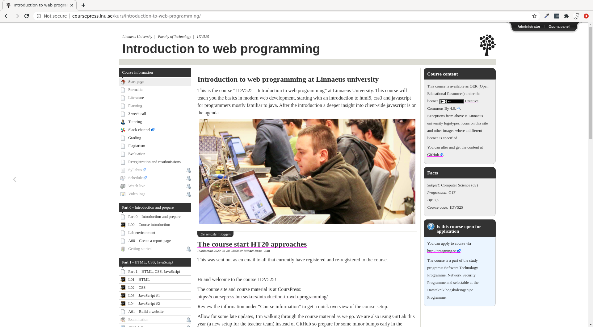
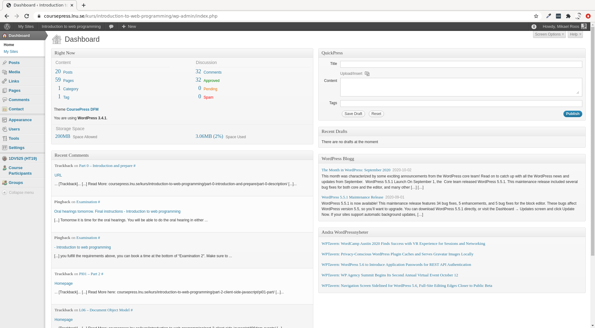
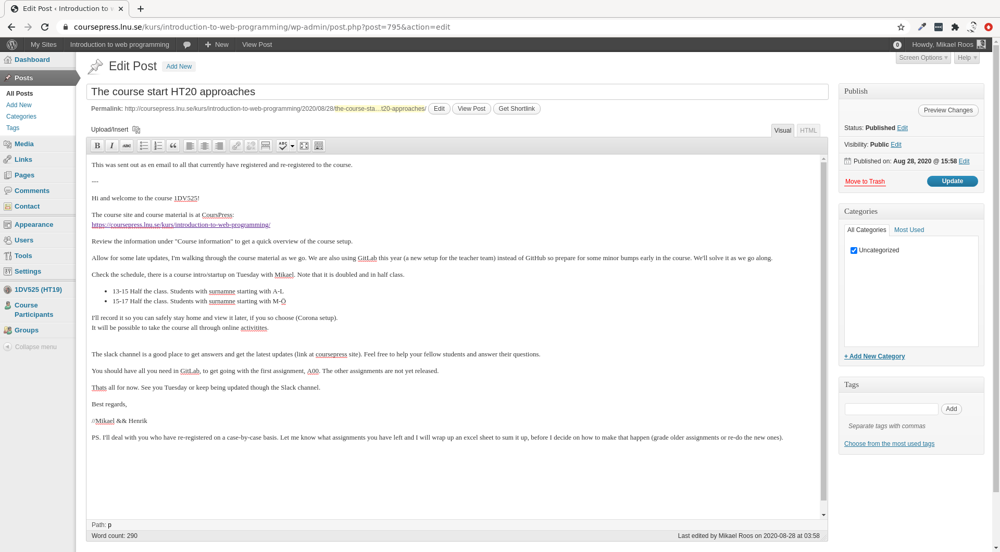
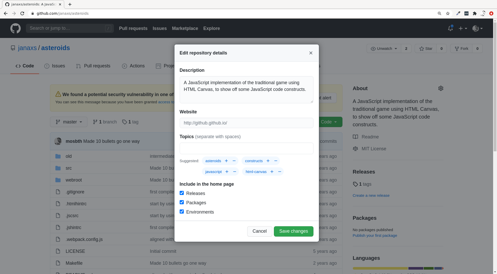
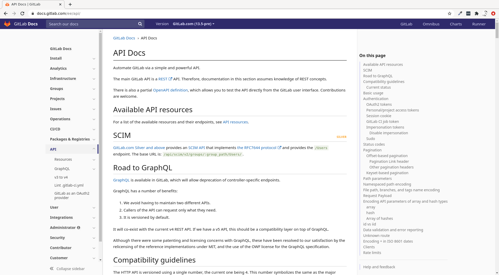
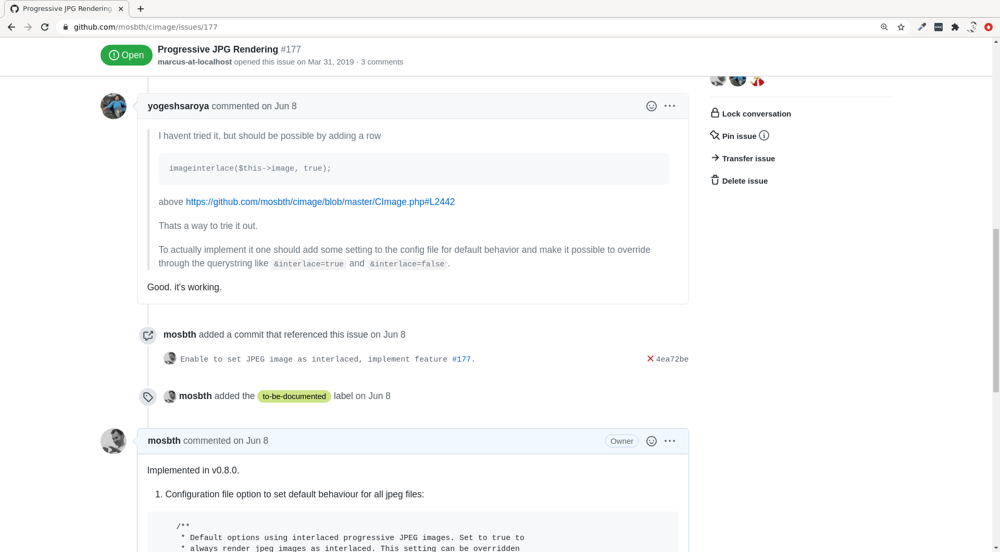
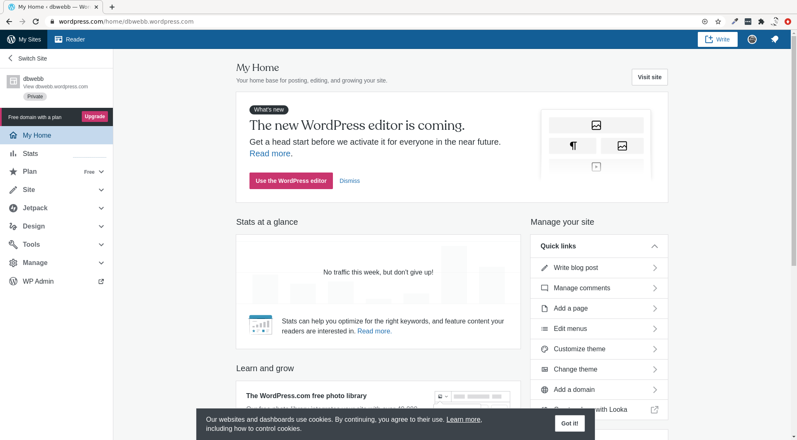
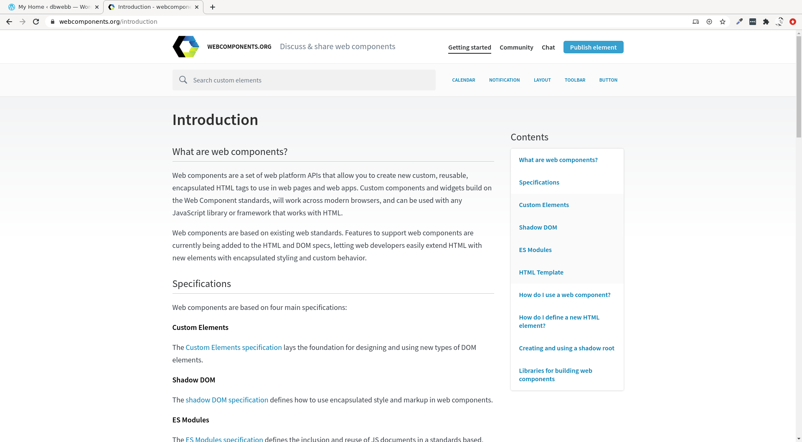
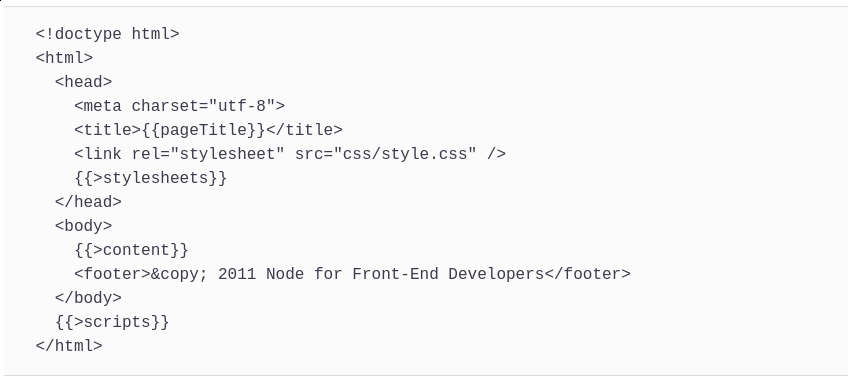

<!doctype html>
<html lang="en">
<meta charset="utf-8" />
<title>Introduction to web programming</title>

<!-- Mithril HTML Slideshow styles -->
<link href="css/mithril-slideshow.css" rel="stylesheet" />

<!-- Code formatting using highlight.js -->
<link rel="stylesheet" href="css/default.css">
<link rel="stylesheet" href="css/tomorrow.css">
<script src="js/highlight.pack.js"></script>

<!-- Text formatting using Markdown through showdown.js -->
<script src="js/showdown.min.js"></script>


<script data-role="slide" data-markdown type="text/html">
# Introduction to web programming
## JavaScript SPA
### Mikael Roos
</script>


<script data-role="slide" data-markdown type="text/html">
# Agenda

* SPA technology
* SPA relate to Web API
* Web API
    * Web Storage API
    * HTML Drag and Drop API
    * WebSocket API

</script>


<script data-role="slide" data-markdown type="text/html">
# Single Page Application (SPA)

</script>


<script data-role="slide" data-markdown type="text/html">
# Non SPA

* Browser makes request to server
* Server produces a page (HTML)
    * With or withouth server side scripts
    * May be connected to database or other servers
* Browser gets page source
* Browser renders the document

</script>


<script data-role="slide" data-markdown type="text/html">
# Non SPA solutions

* Classic webserver with dynamic pages
* PHP (Python, Java, basically any programming language)
* Content management solutions (CMS)
* Frameworks, MVC with variants

</script>


<script data-role="slide" data-markdown type="text/html">



</script>


<script data-role="slide" data-markdown type="text/html">



</script>


<script data-role="slide" data-markdown type="text/html">



</script>


<script data-role="slide" data-markdown type="text/html">
# Dynamically update browser

* Without reloding the page
    * Get data
    * Put data
* AJAX/XMLHttpRequest
    * jQuery popular solution
* Fetch API

</script>


<script data-role="slide" data-markdown type="text/html">



</script>


<script data-role="slide" data-markdown type="text/html">
# REST servers

* Web servers, services
* No web pages, only data
* REST API
* JSON, XML, (GraphQL)
* HTTP methods GET, POST, PUT, DELETE, PATCH
* Browser uses fetch
* Browser contains the GUI

</script>


<script data-role="slide" data-markdown type="text/html">



</script>


<script data-role="slide" data-markdown type="text/html">
# Server update browser

* Long-polling AJAX
* Web sockets
* Bi-directional communication
* Small text messages, no overhead
* Realtime updates to the browser

</script>


<script data-role="slide" data-markdown type="text/html">



</script>


<script data-role="slide" data-markdown type="text/html">
# Browser as SPA GUI

* Local router #
* Own frontcontroller
    * Controller
    * Update model (GUI)
* Redraw the Document (DOM API)
* All in the same Document (no page reload)

</script>


<script data-role="slide" data-markdown type="text/html">



</script>


<script data-role="slide" data-markdown type="text/html">
# Web components

* Custom elements with behaviour (set of API)
* Shadow DOM (encapsulate element DOM tree)
* HTML templates (not visible, but reusable)
    * `<template>`, `<slot>`

</script>


<script data-role="slide" data-markdown type="text/html">
# Web components howto

* Create ES6 Class for the component functionality
* Register it `CustomElementRegistry.define()`
* Attach a shadow DOM `Element.attachShadow()`
* Define a HTML template
* Use your custom element, as a ordinary HTML element

</script>


<script data-role="slide" data-markdown type="text/html">



</script>


<script data-role="slide" data-markdown type="text/html">
# SPA summarize

* The whole app in the browser
* Download all essentials on start
* Get/set data to remote (REST server)
* Render updates to UI locally
* One single page, no reload

</script>


<script data-role="slide" data-markdown type="text/html">
# Server side templates

* Render GUI
    * Data to render
    * Template to render in
* Use template languages
* Work with Views as in MVC
* Reduce load in browser

</script>


<script data-role="slide" data-markdown type="text/html">



</script>


<script data-role="slide" data-markdown type="text/html">
# Online and Offline

* Browser events for being online/offline
* Local storage
* Session storage
* IndexedDB

</script>


<script data-role="slide" data-markdown type="text/html">
# State

* What about the application state?
* Cache in application?
    * Avoid unneded requests
* Store in server using sessions/authentication?
* Web Storage API?

</script>


<script data-role="slide" data-markdown type="text/html">
# Update state

* When updating the application state
    * How to update the GUI?
* Hardcode the state and its updates
* Solutions like Observer or Publisher/subsscriber patterns

</script>


<script data-role="slide" data-markdown type="text/html">
# More Web API

* Server Sent API
* Web Workers API
* WebGL/Canvas
* Animations, video, audio, vr...
* Mobile applications (battery, bluteooth, geolocation, cam)
* Desktop applications (atom, vscode)

</script>


<script data-role="slide" data-markdown type="text/html">
# Review examples

* HTML Drag and Drop API
* Web Storage API
* Web Socket API

</script>


<script data-role="slide" data-markdown type="text/html">
# Last words

* Questions on that?

</script>


<script data-role="slide" data-markdown type="text/html">
</script>


<!-- include essential js-script -->
<script src="js/mithril.min.js"></script>
<script src="js/mithril-slideshow.js"></script>
